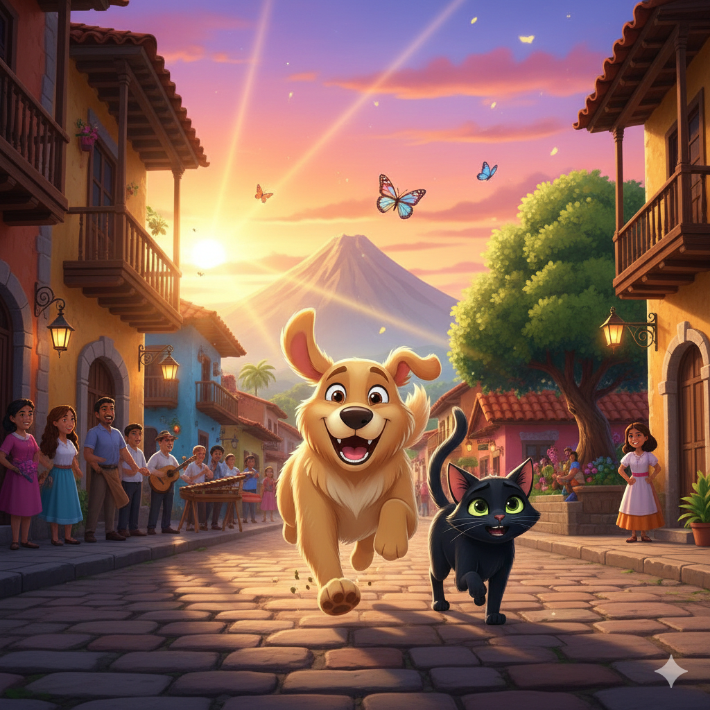

Jake comenzó a correr como cuando era joven. Sus patas se movían con alegría y su respiración se mezclaba con el viento. Miku lo observaba, sintiendo felicidad pero también preocupación.
El sol empezaba a descender, pero Jake parecía no querer detenerse.
¿Qué debería hacer Miku?
Dejar que Jake siga corriendo